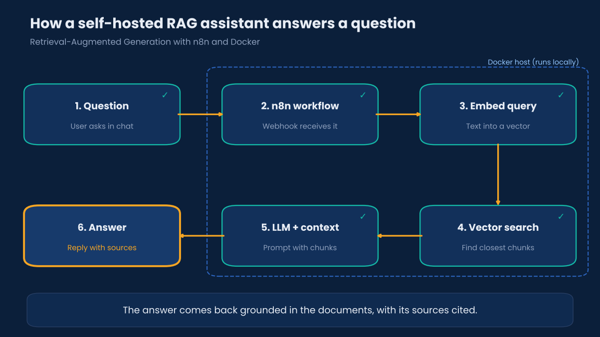

AI automation
Self-hosted RAG assistant with n8n & Docker
A question-answering assistant that runs on a local machine. An n8n workflow receives each question, searches a vector database of course notes, and passes the closest passages to a language model so that answers are grounded in real material and cite their sources.